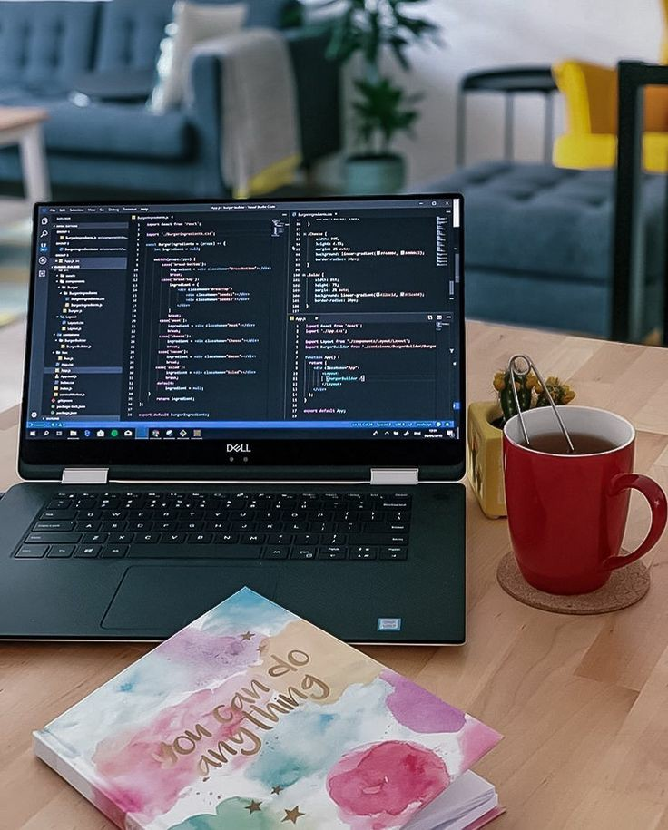

TENTANGAKU.COM -ABTME
Cita-Cita
-
Programmer
Alasan ku bercita - cita sebagai programmer yaitu, di era sekarang teknologi sangatlah dibutuhkan oleh semua pihak, maka dari itu lapangan pekerjaan di bidang it juga sangatlah terbuka lebar, sebagai seseorang yang tertarik dalam dunia pemrograman, aku juga harus mempelajari tentang apa yang menjadi tren pada saat ini.
-
Mempelajari hal-hal dasar tentang it
Untuk memulai memasuki dunia it, aku harus memahami bagaimana dasar dari it, maka dari itu aku akan fokus ke dalam pembelajaran mengenai it.
-
Giat dalam belajar dan ingin mempelajari hal baru tentang it
Dunia it sangatlah luas, maka dariitu aku harus giat dalam memelajarinya dan apabila aku sudah dapat memelajari sedikit banyak tentang it, aku akan mencoba untuk mengembangkan fokus ku ke dalam satu bidang.
-
Ingin fokus ke dalam pengembangan aplikasi
Alasan ku ingin mengembangkan dan memelajari tentang pengembangan aplikasi adalah aku ingin membuat hal baru dan mungkin hal yang kubuat akan berguna dan dapat membantu orang lain, maka dari itu aku ingin juga berfokus pada dunia game.
Apa yang aku lakukkan agar bisa menggapai mimpi?
-
Mempelajari hal-hal dasar tentang it
-
Translator
Aku adalah orang yang banyak bicara dan mudah akrab dengan oeang lain, disamping itu aku juga ingin mencoba hal baru, ingin mengetahui berbagai macam orang, dan memanmbah pengalaman serta ilmu.
-
Menguasai bahasa internasional
Untuk menjadi seorang translator, diperlukan kemahiran dalam berbicara, apalagi dalam perbedaan bahasa, maka dari itu aku harus belajar untuk menguasai bahasa asing internasional agara aku dapat lebih mudah berkomunikasi dengan orang lain.
-
Belajar untuk menguasai banyak bahasa
Apabila sudah mendalami satu bahasa asing, maka aku akan mencoba untuk menguasai bahasa lain.
Apa yang harus aku lakukan agar aku bisa menjadi Translator?
-
Menguasai bahasa internasional
ABOUT ME!

FIND ME ON :
instagram : @ellooouw
twitter : @chimpurplee
youtube : ManiahMellow